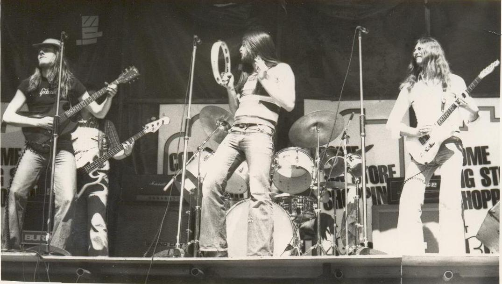
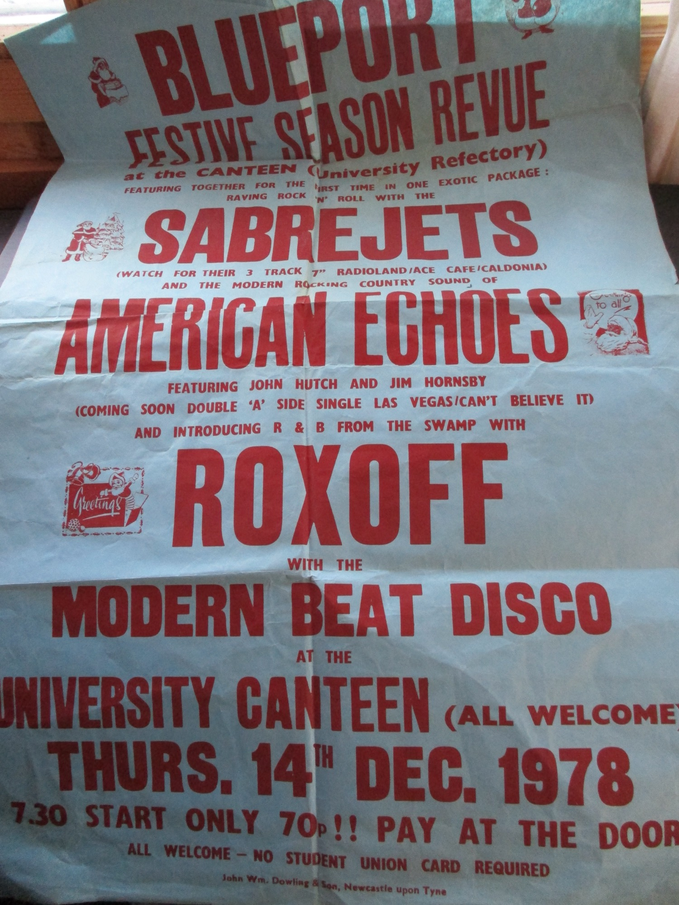
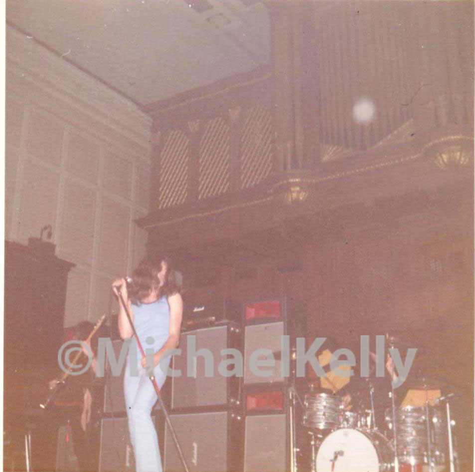
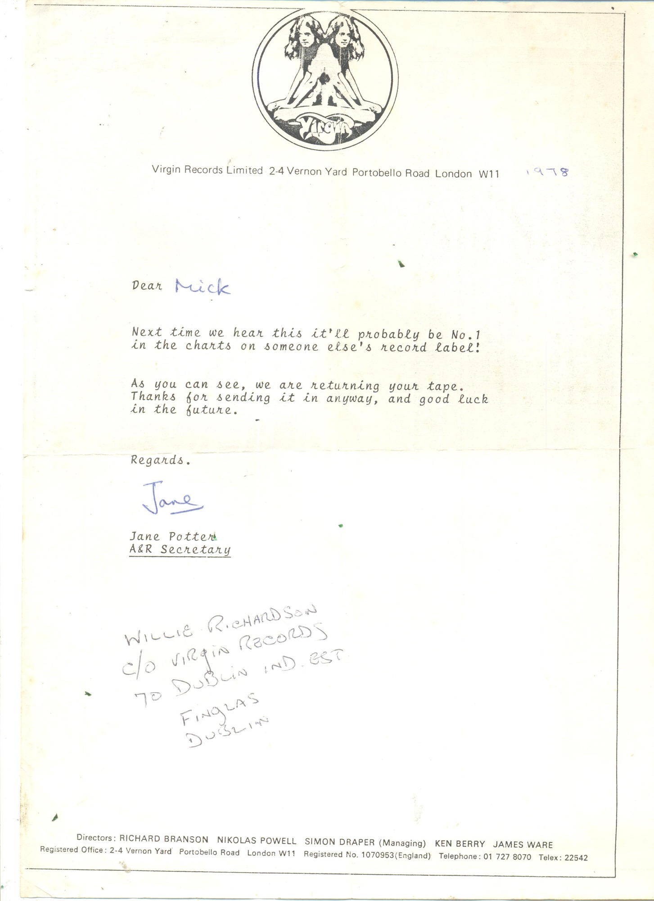
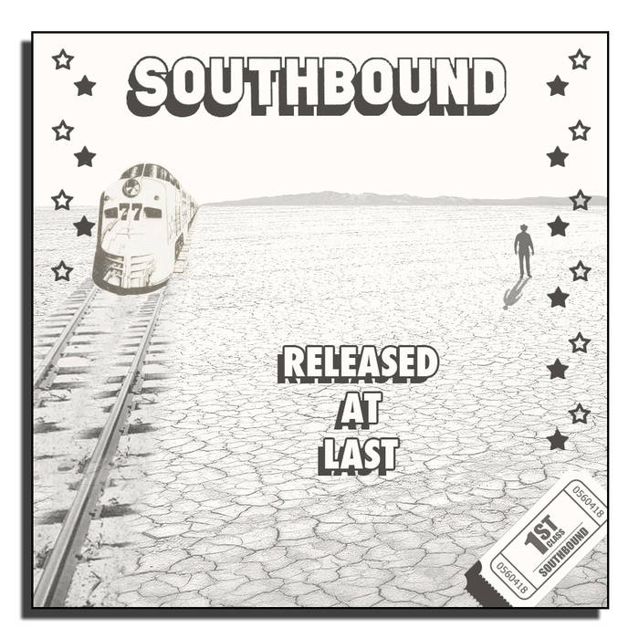
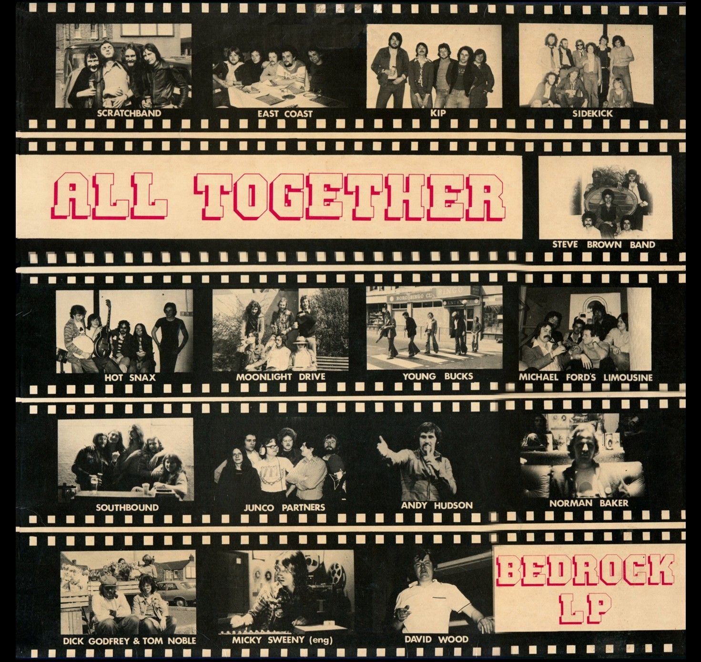

North East of England · 1950s – 1980s
The stories, the stages and the scrapbook of Mick Kelly — drummer with Southbound — from Farringdon Club to the Newcastle pub-rock circuit, the Bedrock Festival and, 38 years on, a record released at last.
Welcome
"I was born a twin in 1952 in Sunderland. When growing up it seemed a much gentler time, with none of today's gadgetry — yet here I am writing a blog with today's technology. I hope you enjoy the stories and history I've put on here." This is that history: the bands, the venues, the clippings and the photographs of a life spent in music.
Explore the archive

From a drummer father at Farringdon Club to The Virgins, NRB, Glider, Stampede and the making of Southbound — a full memoir.
The band's own archive — live shots, Melody Maker cuttings, the Bedrock album, train tickets and 80 photographs.

Led Zeppelin, Deep Purple, T. Rex, Jethro Tull, ELP, Black Sabbath — photographs from the gigs, late '60s through the '70s.

Newspaper articles and reviews, plus the full roll-call of clubs and halls that Southbound played across the North East and beyond.

"Released at Last" — Southbound's recordings, out on Cherry Red Records 38 years later. Stream it, and hear Gimme 3 Steps from 1977.

The Gosforth Hotel residency, the Bedrock Festival, Battle of the Bands, London record labels — and the night Reg Presley borrowed the gear.
From a fan, on the Gosforth Hotel
"The amazing Southbound. They played every Tuesday at the Gosforth Hotel, where Sting used to play with Last Exit. Their set was 99% their own stuff — a bit like the Eagles, only faster, poppier and harder. God, how we hero-worshipped them. We couldn't understand why they weren't huge." — Colin Doddsworth, Floyd Reloaded